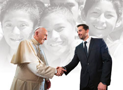

Nuestra historia comienza hace más de 80 años cuando DON MATEO LITCHI incursionó en el ramo de la joyería fina en México, bajo su filosofía que no hay nada más allá de la determinación y la voluntad para superar los retos, día con día con un objetivo bien trazado, emprendió un camino que sin duda hizo trascender su misión, su filosofía y sus valores hasta nuestros días.
Desde su creación, NICE ha brindado una oportunidad de negocio a miles de personas en diversos países de América Latina haciendo posible mejorar su calidad de vida. Hoy por hoy, nos hemos posicionado como la empresa más importante y consolidada en la fabricación y distribución de joyería y accesorios.
Fundación Nice A.C. es una Institución que a partir de su creación a raíz del Huracán Paulina en 1999, ha cumplido sus objetivos año con año. A través de ella cientos de mexicanos, en su mayoría niños de escasos recursos se han visto beneficiados tanto en el área escolar como en la médica.
Se brinda un importante apoyo a través de la Villa de Los Niños AC, haciendo posible que múltiples generaciones terminen satisfactoriamente el nivel medio superior, así como también otorgando becas de estudio y entregando útiles escolares que van desde pre escolar hasta secundaria.
En el área de la salud, se han realizado múltiples cirugías mayores de corazón, pudiendo salvar vidas, y de plexo braquial con las cuales los pequeños pacientes han podido recuperar la movilidad de sus brazos. Así mismo, se han realizado entregas de aparatos auditivos, y se han brindado apoyos económicos para adquisición de medicamentos.